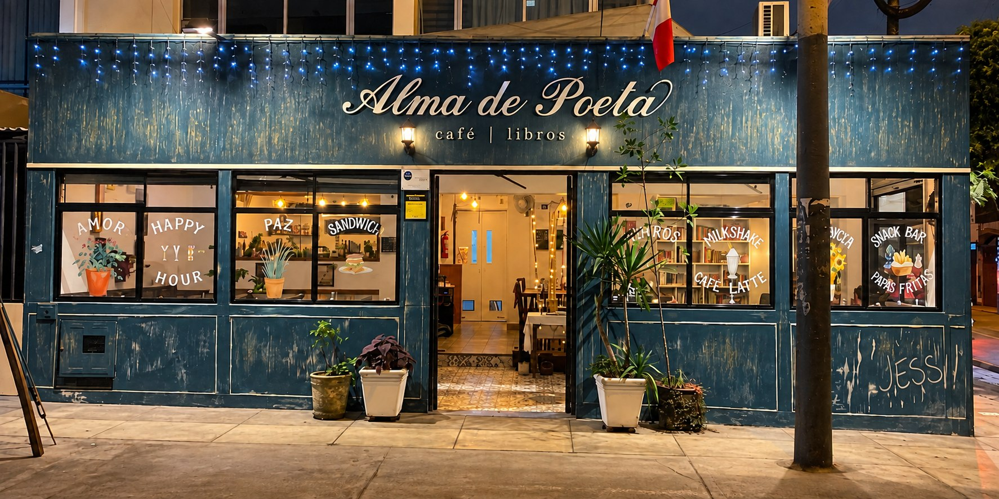
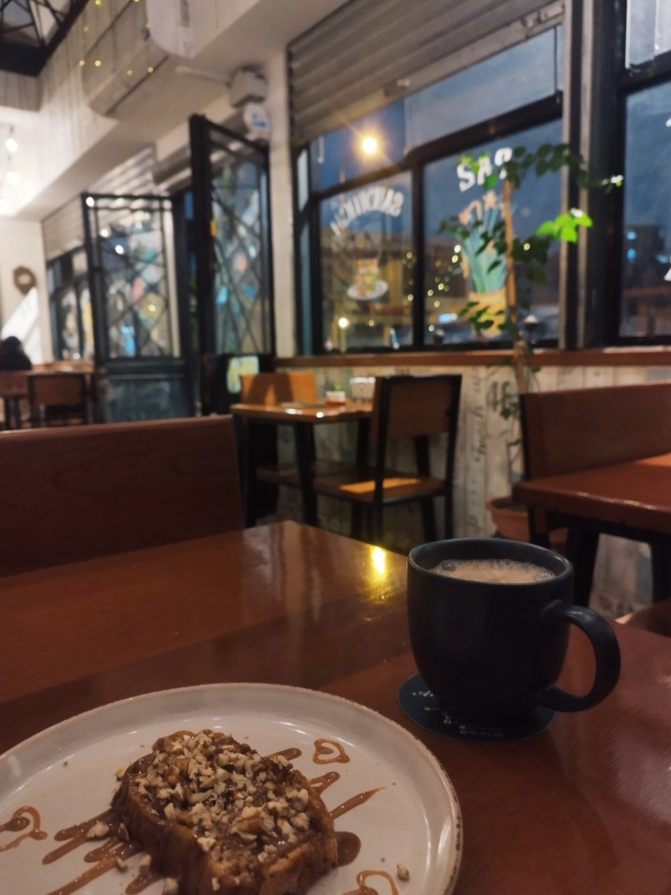
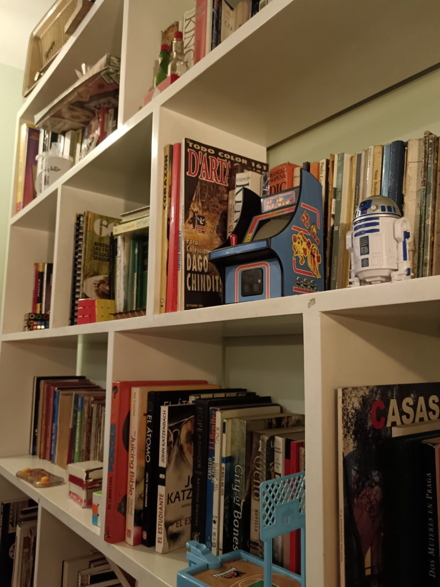
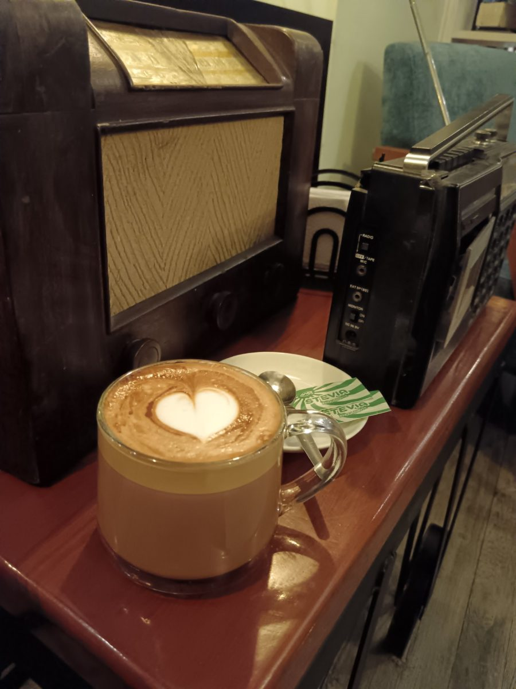
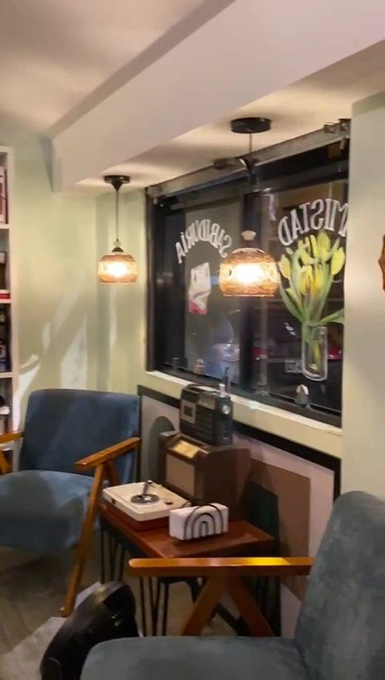

un espacio de familia, amigos y librosa place for family, friends and books
Café · Librería · Restaurante — Cercado de LimaCoffee · Bookshop · Restaurant — Lima, Perú
Lun a Mié 5:00–10:00 pm · Jue a Sáb 5:00–11:00 pm · Dom cerradoMon–Wed 5–10 pm · Thu–Sat 5–11 pm · Closed Sunday
Sobre nosotrosAbout us
Alma de Poeta nació de una idea simple: que un café pueda sentirse como una casa. Un salón con estantes llenos de libros para leer aquí mismo, mesas largas donde caben la familia y los amigos, y una cocina hecha en casa de inspiración americana.
Abrimos por las tardes, cuando la ciudad baja el ritmo. Ven a leer, a conversar, a quedarte más de lo que pensabas.
Alma de Poeta started from a simple idea: that a café can feel like a home. A room lined with books to read right here, long tables with room for family and friends, and a homemade kitchen with American soul.
We open in the late afternoon, when the city slows down. Come to read, to talk, to stay longer than you planned.
De San Ignacio, Cajamarca, a 1750 msnm. 100% arábica, tostado medio oscuro por Armache.From San Ignacio, Cajamarca, at 1750 m. 100% arabica, medium-dark roast by Armache.
Estantes abiertos de pared a pared. Toma un libro, siéntate y quédate un rato.Open shelves from wall to wall. Take a book, sit down, stay a while.
Panes artesanales, mermeladas y miel de la casa, hamburguesas, tacos y desayunos a cualquier hora.Artisan breads, homemade jams and honey, burgers, tacos and all-day breakfast.




La cartaThe menu
Tres de la casaThree house favourites
Mezcla de res, cerdo y tocino, queso cheddar, cebollas caramelizadas, palta y rúgula en pan brioche rojo.
Nueve rollitos de masa wantán con pico de gallo, mozzarella y tocino, con salsa de palta-culantro.
Pie de helado de chocolate, café y licor de Baileys con bits de chocolate y pecanas.
Diez categorías: entradas, sánguches, hamburguesas, tacos, postres, desayunos, cafés, infusiones y más.Ten sections: starters, sandwiches, burgers, tacos, desserts, breakfast, coffee, teas and more.
Ver la carta completaOpen the full menuUbicación y horarioFind us
Jr. Arístides del Carpio Muñoz 1679
Urb. Los Cipreses, Cercado de Lima, Perú
Abrir en Google MapsOpen in Google MapsEscríbenosSay hello
Respondemos por WhatsApp en horario de atención. También estamos en redes como @almadepoetaperu.We answer on WhatsApp during opening hours. We are also @almadepoetaperu on social media.
+51 981 594 659@almadepoetaperu